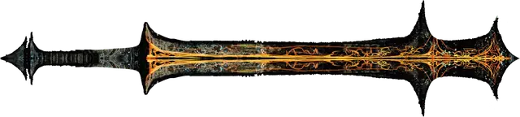

Адское оружие
Hellfire Weapon
Оружие (любое), необычное

Рекомендованная стоимость 101-500 зм
Это оружие выковано из адского железа и пронизано прожилками адского огня, которые испускают тусклый свет в радиусе 5 футов.
При убийстве любого Гуманоида, совершенного этим оружием, душа убитого, отправляется в реку Стикс, где она мгновенно перерождается в лемура [lemure].